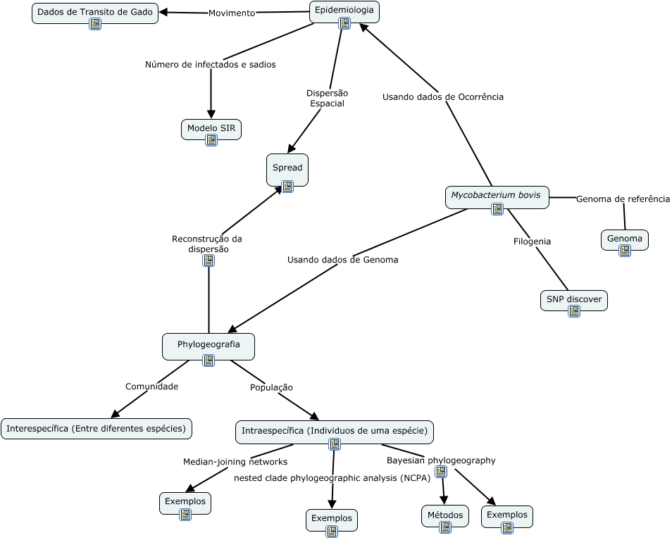

WARNING:
JavaScript is turned OFF. None of the links on this concept map will
work until it is reactivated.
If you need help turning JavaScript On, click here.
Esse mapa conceitual, produzido no IHMC CmapTools, tem a informação relacionada a: phylogeografia, Mycobacterium bovis Usando dados de Ocorrência Epidemiologia, Phylogeografia Comunidade Interespecífica (Entre diferentes espécies), Epidemiologia Número de infectados e sadios Modelo SIR, Genoma Genoma de referência Mycobacterium bovis, Intraespecífica (Individuos de uma espécie) Median-joining networks Exemplos, Mycobacterium bovis Usando dados de Genoma Phylogeografia, Intraespecífica (Individuos de uma espécie) Bayesian phylogeography Métodos, Phylogeografia Reconstrução da dispersão Spread, Intraespecífica (Individuos de uma espécie) nested clade phylogeographic analysis (NCPA) Exemplos, Epidemiologia Movimento Dados de Transito de Gado, Intraespecífica (Individuos de uma espécie) Bayesian phylogeography Exemplos, SNP discover Filogenia Mycobacterium bovis, Phylogeografia População Intraespecífica (Individuos de uma espécie), Epidemiologia Dispersão Espacial Spread
